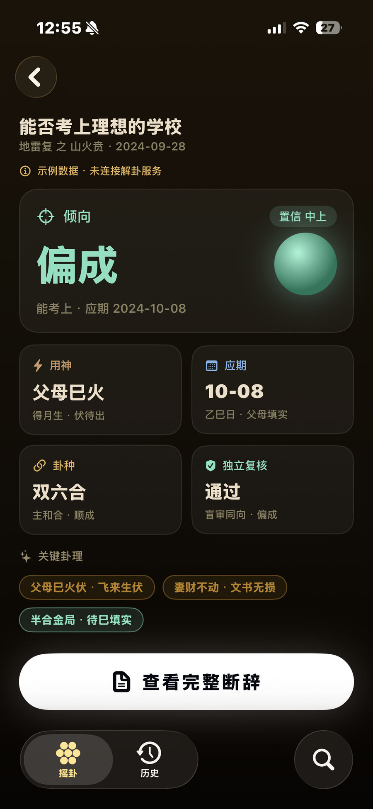
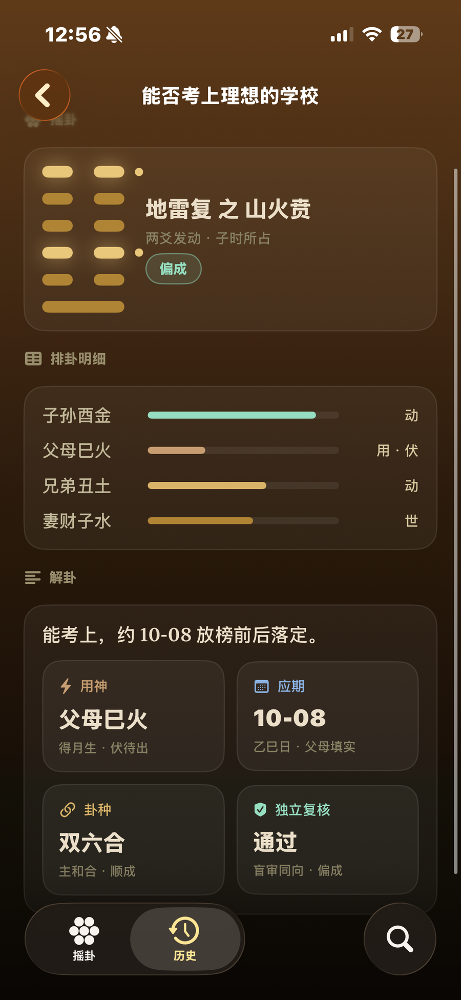
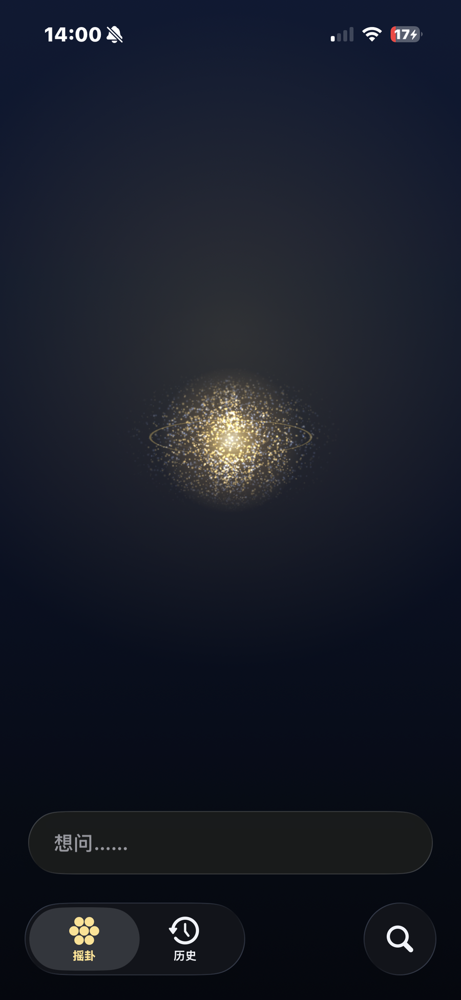

I Ching divination and BaZi reading, powered by an AI reasoning engine over a self-iterating match weight — 100,000 words of classical theory, distilled into 1,500 curated cases.
Cast a hexagram, then read it. The AI reasons over 100,000 words of classical Liu Yao theory, distilled into 1,500 curated cases — every interpretation is a chain of explicit inferences, not a one-line oracle.

The cast — coin throw, six lines, moving lines — produces the same 本卦 → 变卦 structure a practitioner would draw on paper. From there, the AI traces palace assignment, six relatives, hidden gods and the question's relation to each line — and reads them in order.
The 1,500 cases aren't a lookup table. They're worked examples the model reasons over: when the same configuration recurs, the answer cites the precedent; when it doesn't, the model derives one and shows the steps.
Birth time becomes a chart of heavenly stems and earthly branches. The AI reads the chart against classical BaZi texts — four pillars, five elements, ten gods — and turns the configuration into prose you can actually act on.

Charting is mechanical — pillar of year, month, day, hour. Interpretation is where the classical texts disagree most, and where the model earns its weight: it carries the disagreement instead of flattening it, surfacing 三命通会 · 滴天髓 · 子平真诠 in the same reading when they pull in different directions.
Low-match readings flag themselves. A nightly job re-weights the case-matching algorithm — the engine that interprets the hexagram is also the engine that improves it. w' = w + η · (target − match)

Behind the calm, three models. L1 charts the hexagram in deterministic code — palace, six relatives, strength, moving lines — zero error. L2, the main model, reasons to a direction and commits. L3 is a second, independent model, blind to L2's verdict — it audits the reasoning for self-consistency and argues its own.
Self-consistent isn't correct — the blind reviewer exists to break the first model's confident, consistent mistakes. Reconciling the two took few-shot accuracy from 85% to 100%, fully consistent. The answer that returns is calm and structured — a direction, a deciding factor, a timing, an independent review — never a vague oracle.
The classics were never short on theory — only short on patience. An AI that reads 卦 the way a practitioner does, and grades its own confidence, is the rare case where machine reasoning lengthens a tradition instead of flattening it.